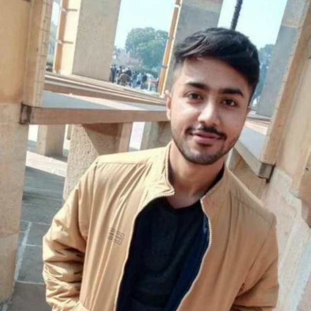
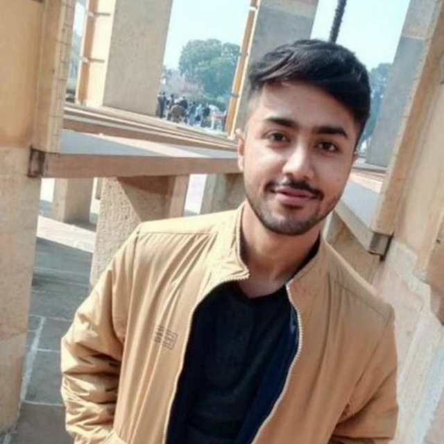
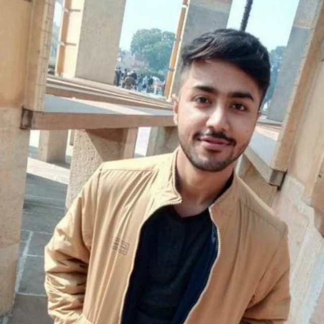

I moved on from the JS Libp2p Tutorial but I know that Shresth has gotten some continued support on it so interested to see where it goes.
I've enjoyed working on IPFS/Libp2p/Orbit-DB stuff as part of Apollo with the BFLO crew and helped them make some progress there.
I've started working on a reboot my Arweave mobile wallet project with a ground-up rewrite as a progressive web app, hopefully with the aim of leveraging the community's existing tooling which is all focused on Javascript. The older app was written in Dart and required me to write the base layer integration with the blockchain on the backend and made development more challenging.
KERNEL News
November, 2020
 

November, 2020
Here begins KERNEL News, a quarterly update on how things are going in the KERNEL community.
Written, curated and crafted with ❤️ by The KERNEL Team.

Nazariy Vavryk
nazariy@inbox.ru
Hello my dear family. I have been well, met a lot of fantastic people, such as Elijah Tai, Luis Freitas, Nick Vale, and so on. I have took part in a number of hackathons and scored top prizes half of the time. Right now my main focus lies on Rent NFT, we will launch it to the mainnet fairly soon: twitter/renftlabs. New hobbies are studying Rust when I have spare time, as well as reminding myself about just how much passion I have for mathematics, and that I would want to dedicate a lot of time to it soon. My Solidity coding is much better since my time at Kernel.


P.S. I remember about the pledge I have made about NAZ token, but so far only Austin bought a small amount. Right now, I am using it completely differently to our social crypto influencers. I have loaded it up with all this collateral, and giving it away to people who help me in whatever way, or just for free :)
P.S. I remember about the pledge I have made about NAZ token, but so far only Austin bought a small amount. Right now, I am using it completely differently to our social crypto influencers. I have loaded it up with all this collateral, and giving it away to people who help me in whatever way, or just for free :)